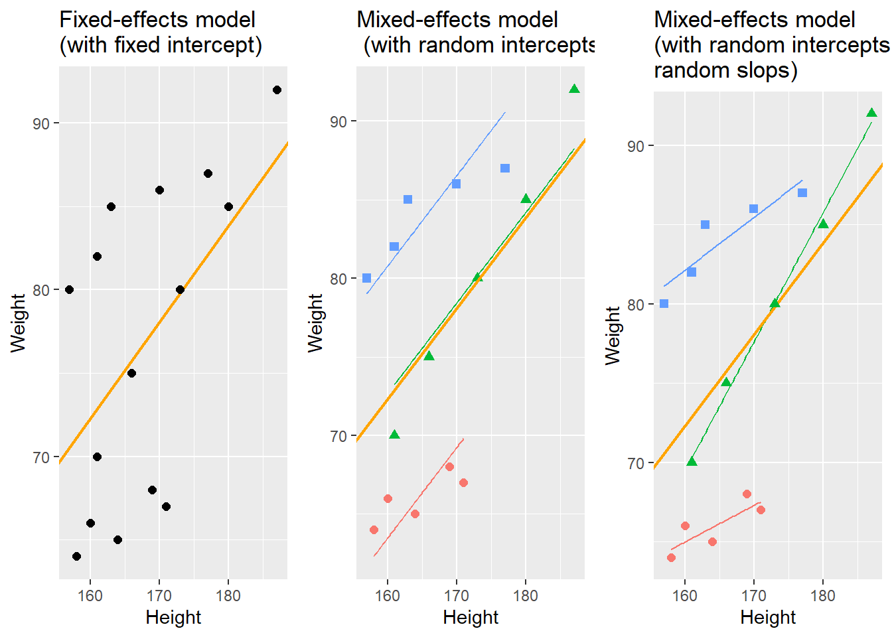
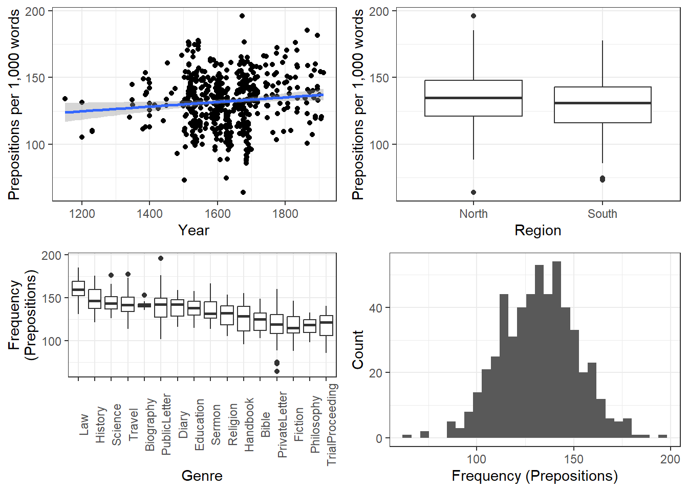
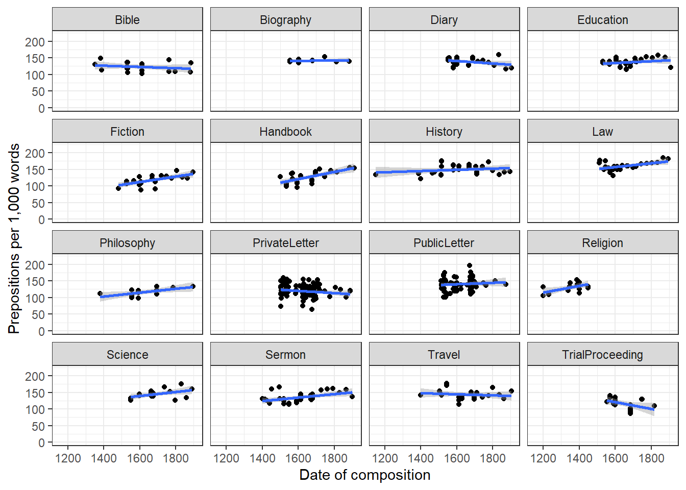
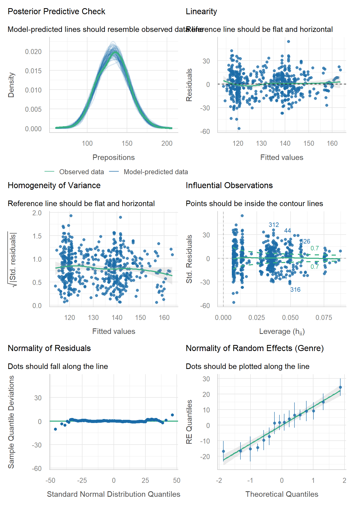
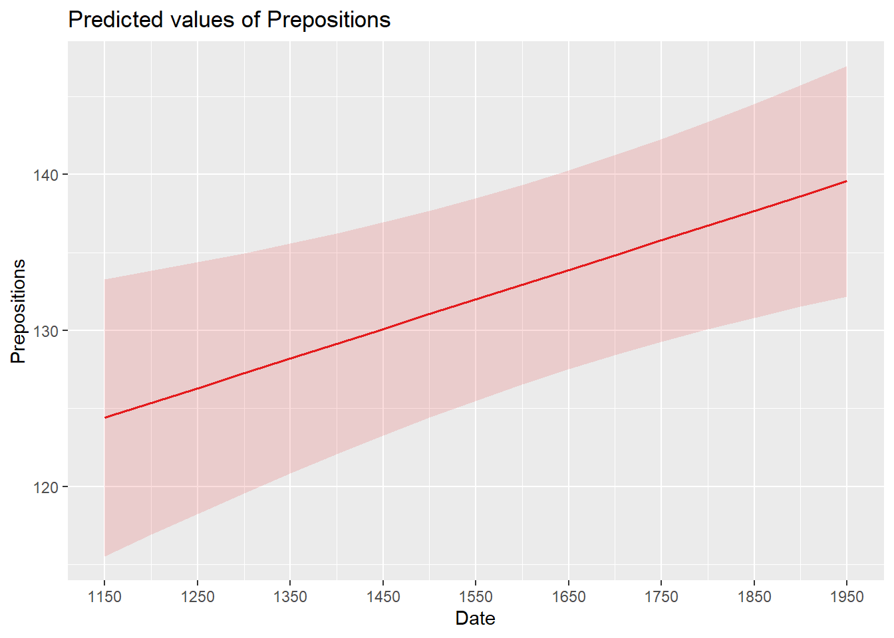
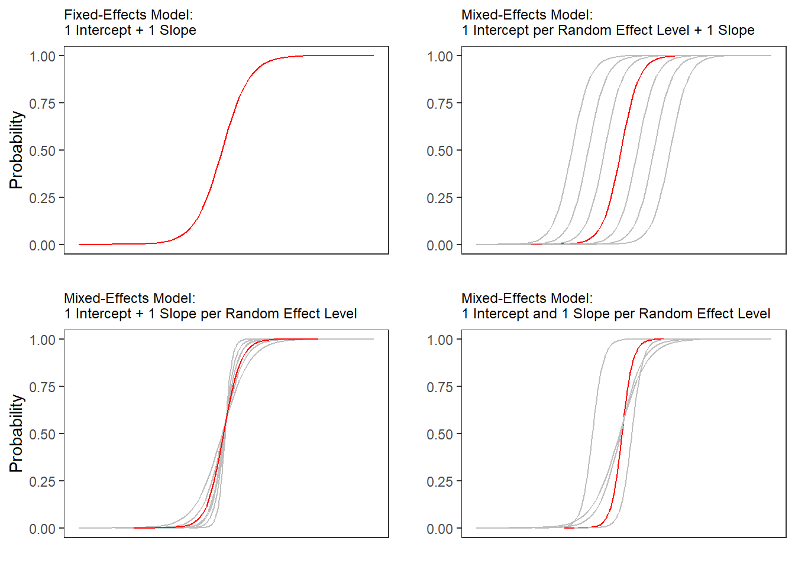
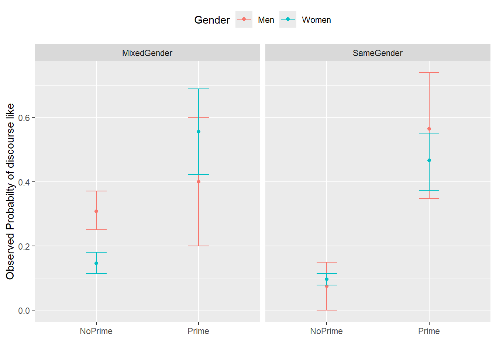
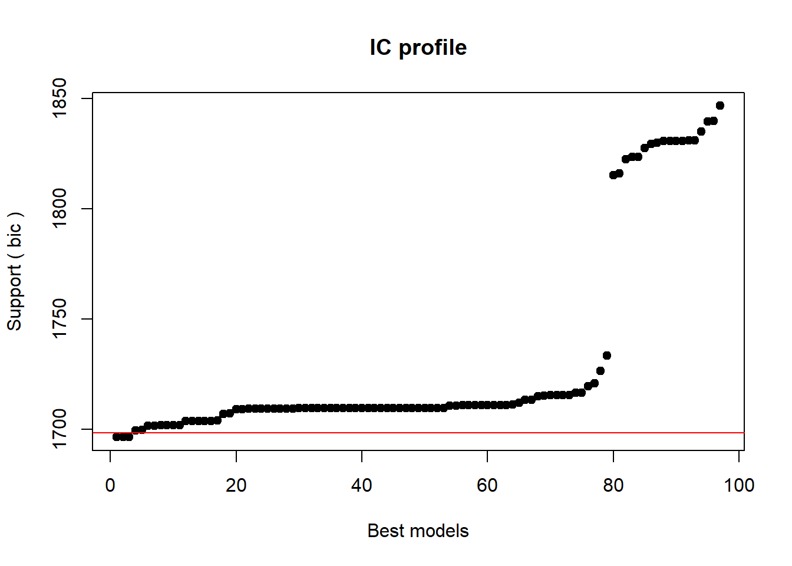
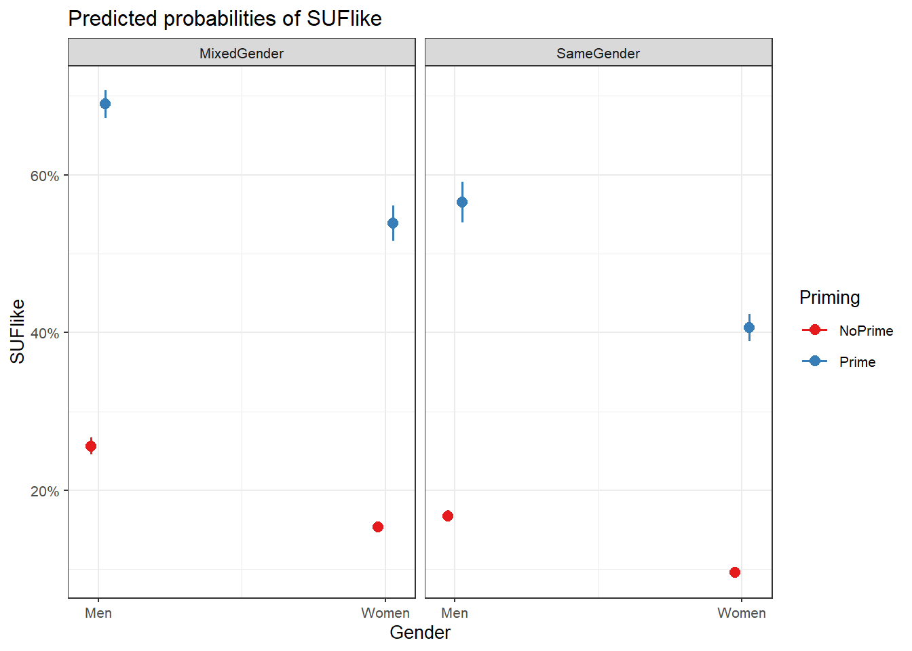
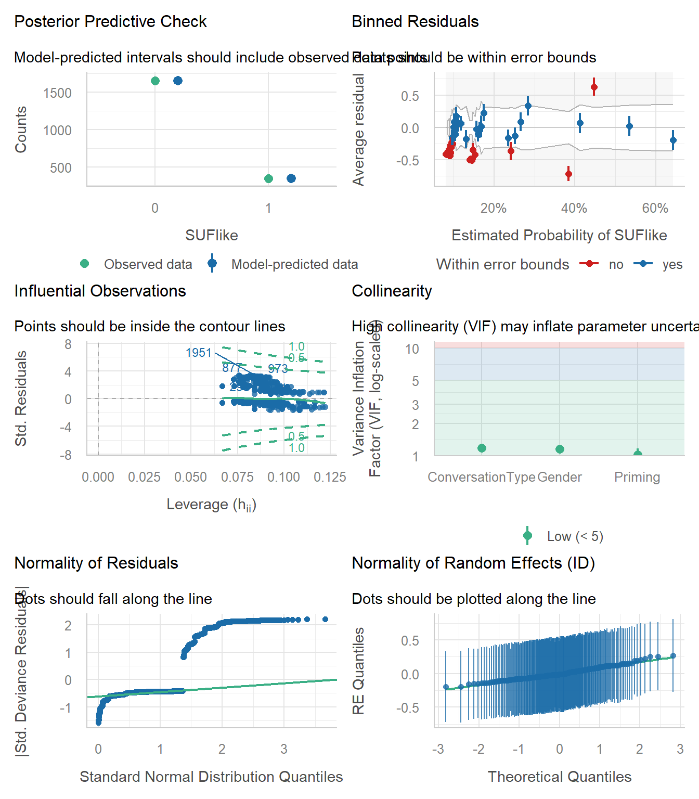

12 Mixed-Effects Regression
What This Session Covers
This session introduces mixed-effects models - the standard tool for hierarchical or repeated-measures data in linguistics.
- Fixed vs. random effects - and why repeated or nested observations violate independence
- Linear mixed-effects regression - random intercepts, ICC, model fitting, and diagnostics
- Mixed-effects logistic regression - modeling binary outcomes with random effects
- Model diagnostics -
check_model(), singularity, and influential observations - Reporting - summarizing mixed models in tables and prose
Mixed-effects models (or mixed models) have become extremely popular in the language sciences. In contrast to fixed-effects regressions, mixed models allow us to model dependency of data points and they are thus used when dealing with hierarchical data structure in which data points are grouped or nested in higher order categories (e.g. students within classes). Therefore, mixed models have a wide range of applications and they have the following advantages:
Mixed-effects models are multivariate, i.e. they test the effect of several predictors simultaneously while controlling for the effect of all other predictors.
Mixed models allow to statistically incorporate within-speaker variability and are thus fit to model hierarchical or nested data structures. This applies if several observations are produced by an individual speaker, for instance.
Mixed-models provide a wealth of diagnostic statistics which enables us to control e.g. multicollinearity, i.e. correlations between predictors, and to test whether conditions or requirements are violated (e.g. homogeneity of variance, etc.).
A disadvantage of mixed models is that they are prone to producing high \(\beta\)-errors (see Johnson 2009) and that they require rather large data sets.
In the following, we will go over mixed-effects linear regression models and mixed-effects binomial logistic regression models.
12.1 Linear Mixed-Effects Regression
Key concept: Fixed vs. random effects
Fixed effects are the predictors whose specific effects we want to estimate and interpret (e.g. Date, Gender, Priming) - their levels are of direct interest and would recur in a replication. Random effects are grouping factors whose levels are a sample from a larger population (e.g. individual speakers, texts, genres, schools): we are not interested in, say, speaker 17 specifically, but we must account for the fact that observations from the same speaker are not independent. Random intercepts allow each group its own baseline; ignoring this structure (pseudoreplication) produces overconfident, anti-conservative results - one of the most common serious errors in quantitative linguistics.
So far, the regression models that we have used only had fixed-effects which means that all data points are treated as if they are completely independent and thus on the same hierarchical level. However, it is very common that the data is nested in the sense that data points are not independent because they are, for instance, produced by the same speaker or are grouped by some other characteristic.
With respect to regression modeling, hierarchical structures are incorporated by what is called random effects. When models only have a fixed-effects structure, then they make use of only a single intercept and/or slope (as in the left panel in the figure below), while mixed effects models have intercepts for each level of a random effect. If the random effect structure represents speakers then this would mean that a mixed-model would have a separate intercept and/or slope for each speaker (in addition to the overall intercept that is shown as an orange line in the figure below).
The equation below represents a formal representation of a mixed-effects regression with varying intercepts (see Winter 2019, 235).
\[\begin{equation} f_{(x)} = \alpha_{i} + \beta x + \epsilon \end{equation}\]
In this random intercept model, each level of a random variable has a different intercept. To predict the value of a data point, we would thus take the appropriate intercept value (the model intercept + the intercept of the random effect) and add the product of the predictor coefficient and the value of x.
Finally, the equation below represents a formal representation of a mixed-effects regression with varying intercepts and varying slopes (see Winter 2019, 235).
\[\begin{equation} f_{(x)} = \alpha_{i} + \beta_{i}x + \epsilon \end{equation}\]
In this last model, each level of a random variable has a different intercept and a different slope. To predict the value of a data point, we would thus take the appropriate intercept value (the model intercept + the intercept of the random effect) and add the coefficient of that random effect level multiplied by the value of x.
Random Effects
Random Effects can be visualized using two parameters: the intercept (the point where the regression line crosses the y-axis at x = 0) and the slope (the acclivity of the regression line). In contrast to fixed-effects models, that have only 1 intercept and one slope (left panel in the figure above), mixed-effects models can therefore have various random intercepts (center panel) or various random slopes, or both, various random intercepts and various random slopes (right panel).
What features do distinguish random and fixed effects?
Random effects represent a higher level variable under which data points are grouped. This implies that random effects must be categorical (or nominal but they cannot be continuous!) (see Winter 2019, 236).
Random effects represent a sample of an infinite number of possible levels. For instance, speakers, trials, items, subjects, or words represent a potentially infinite pool of elements from which many different samples can be drawn. Thus, random effects represent a random sample. Fixed effects, on the other hand, typically do not represent a random sample but a fixed set of variable levels (e.g. Age groups, or parts-of-speech).
Random effects typically represent many different levels while fixed effects typically have only a few. Zuur, Hilbe, and Ieno (2013) propose that a variable may be used as a fixed effect if it has less than 5 levels while it should be treated as a random effect if it has more than 10 levels. Variables with 5 to 10 levels can be used as both. However, this is a rule of thumb and ignores the theoretical reasons (random sample and nestedness) for considering something as a random effect and it also is at odds with the way that repeated measures are modeled (namely as mixed effects) although they typically only have very few levels.
Fixed effects represent an effect that if we draw many samples, the effect would be consistent across samples (Winter 2019) while random effects should vary for each new sample that is drawn.
In terms of general procedure, random effects are added first and only then include the fixed effects.
Preparation and session set up
For this week’s content, we need to install certain packages from an R library so that the scripts shown below are executed without errors. Hence, before turning to the code below, please install the packages by running the code below this paragraph.
# install
install.packages("Boruta")
install.packages("flextable")
install.packages("ggplot2")
install.packages("gridExtra")
install.packages("glmulti")
install.packages("lme4")
install.packages("rms")
install.packages("sjPlot")
install.packages("performance")
install.packages("see")Now that we have installed the packages, we activate them as shown below.
# set options
options("scipen" = 100, "digits" = 12) # suppress math annotation
# load packages
library(flextable)
library(ggplot2)
library(gridExtra)
library(glmulti)
library(lme4)
library(rms)
library(sjPlot)
library(performance)
library(see)Example: Preposition Use across Time by Genre
To explore how to implement a mixed-effects model in R we revisit the preposition data that contains relative frequencies of prepositions in English texts written between 1150 and 1913. As a first step, and to prepare our analysis, we load necessary R packages, specify options, and load as well as provide an overview of the data.
# load data
lmmdata <- base::readRDS(url("https://slcladal.github.io/data/lmd.rda", "rb")) |>
# convert date into a numeric variable
dplyr::mutate(Date = as.numeric(Date))Date | Genre | Text | Prepositions | Region |
|---|---|---|---|---|
1,736 | Science | albin | 166.01 | North |
1,711 | Education | anon | 139.86 | North |
1,808 | PrivateLetter | austen | 130.78 | North |
1,878 | Education | bain | 151.29 | North |
1,743 | Education | barclay | 145.72 | North |
1,908 | Education | benson | 120.77 | North |
1,906 | Diary | benson | 119.17 | North |
1,897 | Philosophy | boethja | 132.96 | North |
1,785 | Philosophy | boethri | 130.49 | North |
1,776 | Diary | boswell | 135.94 | North |
1,905 | Travel | bradley | 154.20 | North |
1,711 | Education | brightland | 149.14 | North |
1,762 | Sermon | burton | 159.71 | North |
1,726 | Sermon | butler | 157.49 | North |
1,835 | PrivateLetter | carlyle | 124.16 | North |
The data set contains the date when the text was written (Date), the genre of the text (Genre), the name of the text (Text), the relative frequency of prepositions in the text (Prepositions), and the region in which the text was written (Region). We now plot the data to get a first impression of its structure.
p1 <- ggplot(lmmdata, aes(Date, Prepositions)) +
geom_point() +
labs(x = "Year", y = "Prepositions per 1,000 words") +
geom_smooth(method = "lm") +
theme_bw()
p2 <- ggplot(lmmdata, aes(Region, Prepositions)) +
geom_boxplot() +
labs(x = "Region", y = "Prepositions per 1,000 words") +
geom_smooth(method = "lm") +
theme_bw()
p3 <- ggplot(lmmdata, aes(x = reorder(Genre, -Prepositions), y = Prepositions)) +
geom_boxplot() +
theme_bw() +
theme(axis.text.x = element_text(angle=90)) +
labs(x = "Genre", y = "Frequency\n(Prepositions)")
p4 <- ggplot(lmmdata, aes(Prepositions)) +
geom_histogram() +
theme_bw() +
labs(y = "Count", x = "Frequency (Prepositions)")
grid.arrange(p1, p2, p3, p4, nrow = 2)
The scatter plot in the upper panel indicates that the use of prepositions has moderately increased over time while the boxplots in the lower left panel show that the genres differ quite substantially with respect to their median frequencies of prepositions per text. Finally, the histogram in the lower right panel show that preposition use is distributed normally with a mean of 132.2 prepositions per text.
ggplot(lmmdata, aes(Date, Prepositions)) +
geom_point() +
facet_wrap(~ Genre, nrow = 4) +
geom_smooth(method = "lm") +
theme_bw() +
labs(x = "Date of composition", y = "Prepositions per 1,000 words") +
coord_cartesian(ylim = c(0, 220))
Centering numeric variables is useful for later interpretation of regression models: if the date variable were not centered, the regression would show the effects of variables at year 0(!). If numeric variables are centered, other variables are variables are considered relative not to 0 but to the mean of that variable (in this case the mean of years in our data). Centering simply means that the mean of the numeric variable is subtracted from each value.
lmmdata <- lmmdata |>
dplyr::mutate(DateUnscaled = Date,
Date = scale(Date, scale = F))Date | Genre | Text | Prepositions | Region | DateUnscaled |
|---|---|---|---|---|---|
109.8696461825 | Science | albin | 166.01 | North | 1,736 |
84.8696461825 | Education | anon | 139.86 | North | 1,711 |
181.8696461825 | PrivateLetter | austen | 130.78 | North | 1,808 |
251.8696461825 | Education | bain | 151.29 | North | 1,878 |
116.8696461825 | Education | barclay | 145.72 | North | 1,743 |
281.8696461825 | Education | benson | 120.77 | North | 1,908 |
279.8696461825 | Diary | benson | 119.17 | North | 1,906 |
270.8696461825 | Philosophy | boethja | 132.96 | North | 1,897 |
158.8696461825 | Philosophy | boethri | 130.49 | North | 1,785 |
149.8696461825 | Diary | boswell | 135.94 | North | 1,776 |
278.8696461825 | Travel | bradley | 154.20 | North | 1,905 |
84.8696461825 | Education | brightland | 149.14 | North | 1,711 |
135.8696461825 | Sermon | burton | 159.71 | North | 1,762 |
99.8696461825 | Sermon | butler | 157.49 | North | 1,726 |
208.8696461825 | PrivateLetter | carlyle | 124.16 | North | 1,835 |
We now set up a mixed-effects model using the lmer function from the lme4 package (Bates et al. 2015) with Genre as a random effect.
# generate models
m0.lmer = lmer(Prepositions ~ 1 + (1|Genre), REML = T, data = lmmdata)Before we start adding fixed effects, we check whether including the random effect structure is justified. To do this, we use two functions from the performance package (Lüdecke et al. 2021): the icc function, which reports the intra-class correlation coefficient (ICC), i.e. the proportion of the total variance that is accounted for by the grouping structure (here: Genre) - substantial ICC values indicate that observations within the same group are more similar to each other than to observations from other groups, which warrants the inclusion of the random effect - and the check_singularity function, which tests whether the random effect structure is too complex to be supported by the data (a singular fit means that the variance of (parts of) the random effect structure is estimated to be (close to) zero, which indicates that the random effect structure should be simplified).
# intra-class correlation coefficient
performance::icc(m0.lmer)# Intraclass Correlation Coefficient
Adjusted ICC: 0.409
Unadjusted ICC: 0.409# check for singular fit
performance::check_singularity(m0.lmer)[1] FALSEThe ICC shows that a substantive proportion of the variance is accounted for by Genre and the model does not suffer from a singular fit. Including the random effect structure is thus justified and we can continue to fit the model to the data.
Model Fitting
After having determined that including a random effect structure is justified, we can continue by fitting the model and including diagnostics as we go. Including diagnostics in the model fitting process can save time and prevent relying on models which only turn out to be unstable if we would perform the diagnostics after the fact.
We begin fitting our model by adding Date as a fixed effect and compare this model to our mixed-effects base-line model to see if Date improved the model fit by explaining variance and if Date significantly correlates with our dependent variable (this means that the difference between the models is the effect (size) of Date!)
m1.lmer <- lmer(Prepositions ~ (1|Genre) + Date, REML = T, data = lmmdata)
anova(m1.lmer, m0.lmer, test = "Chi")Data: lmmdata
Models:
m0.lmer: Prepositions ~ 1 + (1 | Genre)
m1.lmer: Prepositions ~ (1 | Genre) + Date
npar AIC BIC logLik -2*log(L) Chisq Df
m0.lmer 3 4501.947337 4514.805331 -2247.973668 4495.947337
m1.lmer 4 4495.017736 4512.161728 -2243.508868 4487.017736 8.9296 1
Pr(>Chisq)
m0.lmer
m1.lmer 0.0028059 **
---
Signif. codes: 0 '***' 0.001 '**' 0.01 '*' 0.05 '.' 0.1 ' ' 1The model with Date is the better model (significant p-value and lower AIC). The significant p-value shows that Date correlates significantly with Prepositions (\(\chi\)2(1): 8.929600937903, p = 0.00281) . The \(\chi\)2 value here is labeled Chisq and the degrees of freedom are calculated by subtracting the smaller number of DFs from the larger number of DFs.
We now test whether Region should also be part of the final minimal adequate model. The easiest way to add predictors is by using the update function (it saves time and typing).
# generate model
m2.lmer <- update(m1.lmer, .~.+ Region)
# check collinearity
performance::check_collinearity(m2.lmer)# Check for Multicollinearity
Low Correlation
Term VIF VIF 95% CI adj. VIF Tolerance Tolerance 95% CI
Date 1.20 [1.11, 1.36] 1.10 0.83 [0.73, 0.90]
Region 1.20 [1.11, 1.36] 1.10 0.83 [0.73, 0.90]# compare models
anova(m2.lmer, m1.lmer, test = "Chi")Data: lmmdata
Models:
m1.lmer: Prepositions ~ (1 | Genre) + Date
m2.lmer: Prepositions ~ (1 | Genre) + Date + Region
npar AIC BIC logLik -2*log(L) Chisq Df
m1.lmer 4 4495.017736 4512.161728 -2243.508868 4487.017736
m2.lmer 5 4494.624343 4516.054333 -2242.312171 4484.624343 2.39339 1
Pr(>Chisq)
m1.lmer
m2.lmer 0.12185Three things tell us that Region should not be included:
the AIC does not decrease,
the BIC increases(!), and
the p-value is higher than .05.
This means, that we will continue fitting the model without having Region included. Well… not quite - just as a note on including variables: while Region is not significant as a main effect, it must still be included in a model if it were part of a significant interaction. To test if this is indeed the case, we fit another model with the interaction between Date and Region as predictor.
# generate model
m3.lmer <- update(m1.lmer, .~.+ Region*Date)
# check collinearity
performance::check_collinearity(m3.lmer)# Check for Multicollinearity
Low Correlation
Term VIF VIF 95% CI adj. VIF Tolerance Tolerance 95% CI
Date 1.97 [1.75, 2.25] 1.40 0.51 [0.44, 0.57]
Region 1.20 [1.11, 1.36] 1.10 0.83 [0.73, 0.90]
Date:Region 1.78 [1.59, 2.03] 1.33 0.56 [0.49, 0.63]# compare models
anova(m3.lmer, m1.lmer, test = "Chi")Data: lmmdata
Models:
m1.lmer: Prepositions ~ (1 | Genre) + Date
m3.lmer: Prepositions ~ (1 | Genre) + Date + Region + Date:Region
npar AIC BIC logLik -2*log(L) Chisq Df
m1.lmer 4 4495.017736 4512.161728 -2243.508868 4487.017736
m3.lmer 6 4496.124872 4521.840861 -2242.062436 4484.124872 2.89286 2
Pr(>Chisq)
m1.lmer
m3.lmer 0.23541Again, the high p-value and the increase in AIC and BIC show that we have found our minimal adequate model which only contains Date as a main effect. In a next step, we can inspect the final minimal adequate model, i.e. the most parsimonious (the model that explains a maximum of variance with a minimum of predictors).
# inspect results
summary(m1.lmer)Linear mixed model fit by REML ['lmerMod']
Formula: Prepositions ~ (1 | Genre) + Date
Data: lmmdata
REML criterion at convergence: 4491.1
Scaled residuals:
Min 1Q Median 3Q Max
-3.734915441 -0.657038004 0.005865025 0.661298615 3.596659863
Random effects:
Groups Name Variance Std.Dev.
Genre (Intercept) 159.021120 12.6103576
Residual 228.764179 15.1249522
Number of obs: 537, groups: Genre, 16
Fixed effects:
Estimate Std. Error t value
(Intercept) 133.88516211469 3.24749296248 41.22724
Date 0.01894493515 0.00632363682 2.99589
Correlation of Fixed Effects:
(Intr)
Date 0.005 Model Diagnostics
We now perform the model diagnostics. What we wish to see in the residual-based diagnostic plots is a cloud of dots without any structure. What we do not want to see is a funnel-shaped cloud because this indicates an increase of the errors/residuals with an increase of the predictor(s) (because this would indicate heteroscedasticity) (Pinheiro and Bates 2000, 182). As with fixed-effects regression models, we use the check_model function from the performance package (Lüdecke et al. 2021) to evaluate the goodness of fit of the model and to check if mathematical requirements and assumptions have been violated.
# generate diagnostic plots
performance::check_model(m1.lmer)
The panels for linearity, homogeneity of variance, influential observations, and normality of residuals are interpreted exactly as in the previous weeks. In addition to these familiar panels, check_model produces a panel that is specific to mixed-effects models: the Normality of Random Effects panel. This panel shows whether the estimated random intercepts (here: the intercept adjustments for the individual genres) follow a normal distribution, which is an assumption of mixed-effects models - the dots should follow the reference line.
We complement the visual inspection with formal checks for influential observations and singularity.
# check for influential observations
performance::check_outliers(m1.lmer)OK: No outliers detected.
- Based on the following method and threshold: cook (0.7).
- For variable: (Whole model)# check for singular fit
performance::check_singularity(m1.lmer)[1] FALSEThe diagnostics do not show any severe violations of the model assumptions (some minor deviations in the tails of the distribution of the residuals are common when dealing with real-life data and no reason for concern here) which tells us that the model is “healthy” and that we can proceed with the interpretation of the model.
Summarizing the results
We will now summarize the results.
sjPlot::tab_model(m1.lmer)| Prepositions | |||
|---|---|---|---|
| Predictors | Estimates | CI | p |
| (Intercept) | 133.89 | 127.51 – 140.26 | <0.001 |
| Date | 0.02 | 0.01 – 0.03 | 0.003 |
| Random Effects | |||
| σ2 | 228.76 | ||
| τ00 Genre | 159.02 | ||
| ICC | 0.41 | ||
| N Genre | 16 | ||
| Observations | 537 | ||
| Marginal R2 / Conditional R2 | 0.012 / 0.417 | ||
The marginal R2 (marginal coefficient of determination) represents the variance explained by the fixed effects while the conditional R2 is interpreted as a variance explained by the entire model, including both fixed and random effects (Bartoń 2020).
The effects can be visualized using the plot_model function from the sjPlot package (Lüdecke 2021).
sjPlot::plot_model(m1.lmer, type = "pred", terms = c("Date")) +
# show uncentered date rather than centered date
scale_x_continuous(name = "Date",
breaks = seq(-500, 300, 100),
labels = seq(1150, 1950, 100))
While we have already shown that the effect of Date is significant, it is small which means that the number of prepositions per text does not correlate very strongly with time. This suggests that other factors that are not included in the model also impact the frequency of prepositions (and probably more meaningfully, too).
Reporting Results
We can use the reports package (Makowski et al. 2021) to summarize the analysis.
report::report(m1.lmer)We fitted a linear mixed model (estimated using REML and nloptwrap optimizer)
to predict Prepositions with Date (formula: Prepositions ~ Date). The model
included Genre as random effect (formula: ~1 | Genre). The model's total
explanatory power is substantial (conditional R2 = 0.42) and the part related
to the fixed effects alone (marginal R2) is of 0.01. The model's intercept,
corresponding to Date = 0, is at 133.89 (95% CI [127.51, 140.26], t(533) =
41.23, p < .001). Within this model:
- The effect of Date is statistically significant and positive (beta = 0.02,
95% CI [6.52e-03, 0.03], t(533) = 3.00, p = 0.003; Std. beta = 0.11, 95% CI
[0.04, 0.19])
Standardized parameters were obtained by fitting the model on a standardized
version of the dataset. 95% Confidence Intervals (CIs) and p-values were
computed using a Wald t-distribution approximation.We can use this output to write up a final report:
We fitted a linear mixed model to predict the relative frequency of prepositions in historical English texts based on the year when the text was written (formula: Prepositions ~ Date). The model included the genre of the text as random effect (formula: ~1 | Genre). The model’s total explanatory power is substantial (conditional R2 = 0.42) and the part related to the fixed effects alone (marginal R2) is of 0.01. The model reported that the effect of the year when the text was written is statistically significant and positive (beta = 0.02 [6.52e-03, 0.03], t(533) = 3.00, p = 0.003; Std. beta = 0.11 [0.04, 0.19]).
12.2 Mixed-Effects Logistic Regression
As is the case with linear mixed-effects models, binomial logistic mixed-effect models are multivariate analyses that treat data points as hierarchical or grouped in some way. In other words, they take into account that the data is nested in the sense that data points are produced by the same speaker or are grouped by some other characteristics. In mixed-models, hierarchical structures are modelled as random effects. If the random effect structure represents speakers then this means that a mixed-model would have a separate intercept and/or slope for each speaker.
Random Effects in linear models can be visualized using two parameters: the intercept (the point where the regression line crosses the y-axis at x = 0) and the slope (the acclivity of the regression line). In contrast to linear mixed-effects models, random effects differ in the position and the slope of the logistic function that is applied to the likelihood of the dependent variable. random intercepts (upper right panel) or various random slopes (lower left panel), or both, various random intercepts and various random slopes (lower right panel). In the following, we will only focus on models with random intercepts because this is the by far more common method and because including both random intercepts and random slopes requires huge amounts of data. Consider the Figure below to understand what is meant by “random intercepts”.

The upper left panel merely shows the logistic curve representing the predictions of a fixed-effects logistic regression with a single intercept and slope. The upper right panel shows the logistic curves representing the predictions of a mixed-effects logistic regression with random intercepts for each level of a grouping variable. The lower left panel shows the logistic curves representing the predictions of a mixed-effects logistic regression with one intercept but random slopes for each level of a grouping variable. The lower right panel shows the logistic curves representing the predictions of a mixed-effects logistic regression with random intercepts and random slopes for each level of a grouping variable.
After adding random intercepts, predictors (or fixed effects) are added to the model (just like with multiple regression). So mixed-effects are called mixed-effects because they contain both random and fixed effects.
In terms of general procedure, random effects are added first, and only after we have ascertained that including random effects is warranted, we test whether including fixed-effects is warranted (Field, Miles, and Field 2012). We test whether including random effects is warranted by comparing a model, that bases its estimates of the dependent variable solely on the base intercept, with a model that bases its estimates of the dependent variable solely on the intercepts of the random effect. If the mixed-effects model explains significantly more variance than the fixed-effects model without random effect structure, then we continue with the mixed-effects model. In other words, including random effects is justified.
12.2.1 Example: Discourse LIKE in Irish English
In this example we will investigate which factors correlate with the use of final discourse like (e.g. “The weather is shite, like!”) in Irish English. The data set represents speech units in a corpus that were coded for the speaker who uttered a given speech unit, the gender (Gender: Men versus Women) and age of that speaker (Age: Old versus Young), whether the interlocutors were of the same or a different gender (ConversationType: SameGender versus MixedGender), and whether another final discourse like had been used up to three speech units before (Priming: NoPrime versus Prime), whether or not the speech unit contained a final discourse like (SUFlike: 1 = yes, 0 = no). To begin with, we load the data and inspect the structure of the data set,
# load data
mblrdata <- base::readRDS(url("https://slcladal.github.io/data/mbd.rda", "rb"))ID | Gender | Age | ConversationType | Priming | SUFlike |
|---|---|---|---|---|---|
S1A-061$C | Women | Young | MixedGender | NoPrime | 0 |
S1A-023$B | Women | Young | MixedGender | NoPrime | 0 |
S1A-054$A | Women | Young | SameGender | NoPrime | 0 |
S1A-090$B | Women | Young | MixedGender | NoPrime | 0 |
S1A-009$B | Women | Old | SameGender | Prime | 0 |
S1A-085$E | Men | Young | MixedGender | Prime | 1 |
S1A-003$C | Women | Young | MixedGender | NoPrime | 1 |
S1A-084$C | Women | Young | SameGender | NoPrime | 0 |
S1A-076$A | Women | Young | SameGender | NoPrime | 0 |
S1A-083$D | Men | Old | MixedGender | NoPrime | 1 |
S1A-068$A | Women | Young | SameGender | NoPrime | 0 |
S1A-066$B | Women | Young | SameGender | NoPrime | 0 |
S1A-061$A | Men | Old | MixedGender | NoPrime | 1 |
S1A-049$A | Women | Young | SameGender | NoPrime | 0 |
S1A-022$B | Women | Young | MixedGender | NoPrime | 0 |
As all variables except for the dependent variable (SUFlike) are character strings, we factorize the independent variables.
# def. variables to be factorized
mblrdata <- mblrdata |>
dplyr::mutate_if(is.character, factor) |>
dplyr::mutate(Age = relevel(Age, "Young")) |>
dplyr::arrange(ID)We now plot the data to inspect the relationships within the data set.
ggplot(mblrdata, aes(Priming, SUFlike, color = Gender)) +
facet_wrap(~ConversationType) +
stat_summary(fun = mean, geom = "point") +
stat_summary(fun.data = mean_cl_boot, geom = "errorbar", width = 0.2) +
theme_set(theme_bw(base_size = 10)) +
theme(legend.position = "top") +
labs(x = "", y = "Observed Probabilty of discourse like")
The figure above indicates that men use discourse like more frequently than women and that priming increases the likelihood of discourse like being used. Speakers also appear to use discourse like more frequently in mixed-gender conversations. In addition, the figure suggests an interaction between gender and conversation type, as women appear to use discourse like less frequently in same-gender conversations while the conversation type does not seem to have an effect on men. After visualizing the data, we will now turn to the model building process.
12.2.2 Model Building
In a first step, we set the options.
# set options
options(contrasts =c("contr.treatment", "contr.poly"))
mblrdata.dist <- datadist(mblrdata)
options(datadist = "mblrdata.dist")In a next step, we generate a base-line mixed-model using the glmer function with a random intercept for ID.
# base-line mixed-model
m0.glmer = glmer(SUFlike ~ (1|ID), data = mblrdata, family = binomial) 12.2.3 Model Fitting
The next step is to fit the model which means that we aim to find the “best” model, i.e. the minimal adequate model. In this case, we will use the glmulti package to find the model with the lowest Bayesian Information Criterion (BIC) of all possible models.
# wrapper function for linear mixed-models
glmer.glmulti <- function(formula,data, random="",...){
glmer(paste(deparse(formula),random), family = binomial, data=data, ...)
}
# define formular
form_glmulti = as.formula(paste("SUFlike ~ Gender + Age + ConversationType + Priming"))Extract best 5 models.
# multi selection for glmer
mfit <- glmulti(form_glmulti,random="+(1 | ID)",
data = mblrdata, method = "h", fitfunc = glmer.glmulti,
crit = "bic", intercept = TRUE, marginality = FALSE, level = 2)Initialization...
TASK: Exhaustive screening of candidate set.
Fitting...
After 50 models:
Best model: SUFlike~1+Gender+ConversationType+Priming
Crit= 1696.58773399859
Mean crit= 1753.96253326009
After 100 models:
Best model: SUFlike~1+Gender+ConversationType+Priming
Crit= 1696.58773399859
Mean crit= 1731.8900101622
Completed.# extract best models
top <- weightable(mfit)
top <- top[1:5,]
# inspect top 5 models
top model
1 SUFlike ~ 1 + Gender + ConversationType + Priming
2 SUFlike ~ 1 + Gender + ConversationType + Priming + Priming:Gender
3 SUFlike ~ 1 + Gender + ConversationType + Priming + Priming:Gender + Priming:ConversationType
4 SUFlike ~ 1 + Gender + Priming + Priming:Gender
5 SUFlike ~ 1 + Gender + ConversationType + Priming + Priming:ConversationType
bic weights
1 1696.58773400 0.2567900986201
2 1696.76989553 0.2344349730577
3 1696.76989553 0.2344349730577
4 1699.62465885 0.0562494682007
5 1699.83927869 0.0505259299057We now define our final minimal model and check its output.
mlr.glmer <- glmer(SUFlike ~ (1 | ID) + Gender + ConversationType + Priming,
family = binomial, data = mblrdata)
# inspect final minimal adequate model
summary(mlr.glmer, corr = F)Generalized linear mixed model fit by maximum likelihood (Laplace
Approximation) [glmerMod]
Family: binomial ( logit )
Formula: SUFlike ~ (1 | ID) + Gender + ConversationType + Priming
Data: mblrdata
AIC BIC logLik -2*log(L) df.resid
1668.6 1696.6 -829.3 1658.6 1995
Scaled residuals:
Min 1Q Median 3Q Max
-1.579356769 -0.415524274 -0.330409172 -0.312054871 3.247877854
Random effects:
Groups Name Variance Std.Dev.
ID (Intercept) 0.0837487102 0.289393694
Number of obs: 2000, groups: ID, 208
Fixed effects:
Estimate Std. Error z value
(Intercept) -1.067433309 0.149187449 -7.15498
GenderWomen -0.642882903 0.175331323 -3.66667
ConversationTypeSameGender -0.536428992 0.148820273 -3.60454
PrimingPrime 1.866249507 0.163248506 11.43195
Pr(>|z|)
(Intercept) 0.00000000000083685 ***
GenderWomen 0.00024573 ***
ConversationTypeSameGender 0.00031270 ***
PrimingPrime < 0.000000000000000222 ***
---
Signif. codes: 0 '***' 0.001 '**' 0.01 '*' 0.05 '.' 0.1 ' ' 1We now test whether the final minimal model performs significantly better than the minimal base-line model, and print the regression summary.
# final model better than base-line model
anova(mlr.glmer, m0.glmer, test = "Chi") Data: mblrdata
Models:
m0.glmer: SUFlike ~ (1 | ID)
mlr.glmer: SUFlike ~ (1 | ID) + Gender + ConversationType + Priming
npar AIC BIC logLik -2*log(L) Chisq Df
m0.glmer 2 1828.492271 1839.694076 -912.2461355 1824.492271
mlr.glmer 5 1668.583222 1696.587734 -829.2916109 1658.583222 165.90905 3
Pr(>Chisq)
m0.glmer
mlr.glmer < 0.000000000000000222 ***
---
Signif. codes: 0 '***' 0.001 '**' 0.01 '*' 0.05 '.' 0.1 ' ' 112.2.4 Visualizing Effects
As we will see the effects in the final summary, we visualize the effects here using the sjPlot package (Lüdecke 2021).
sjPlot::plot_model(mlr.glmer, type = "pred", terms = c("Gender", "Priming", "ConversationType"))
We can see that discourse like is more likely to surface in primed contexts and among men. In same-gender conversations, speakers use discourse like less than in mixed-gender conversations.
12.2.5 Extracting Model Fit Parameters
We now extract model fit parameters (Baayen 2008, 281).
probs = 1/(1+exp(-fitted(mlr.glmer)))
probs = binomial()$linkinv(fitted(mlr.glmer))
somers2(probs, as.numeric(mblrdata$SUFlike)) C Dxy n Missing
0.760226203516 0.520452407033 2000.000000000000 0.000000000000 The two lines that start with probs are simply two different ways to do the same thing (you only need one of these).
The model fit parameters indicate a suboptimal fit. Both the C-value (the concordance statistic) and Somers’ \(\delta\) (Somers’delta) show an acceptable fit between predicted and observed occurrences of discourse like. If the C-value is 0.5, the predictions are random, while the predictions are perfect if the C-value is 1. C-values above 0.8 indicate real predictive capacity (Baayen 2008, 204). Somers’ Dxy is a value that represents a rank correlation between predicted probabilities and observed responses. Somers’ Dxy values range between 0, which indicates complete randomness, and 1, which indicates perfect prediction (Baayen 2008, 204). The C-value of 0.76 suggests that the model has some predictive and explanatory power, but not at an optimal level. We will now perform the model diagnostics: as with the fixed-effects binomial logistic regression, we check the binned residuals, collinearity, and influential observations, and, as with the linear mixed-effects model, we additionally check the normality of the random effects and whether the model suffers from a singular fit.
# generate diagnostic plots
performance::check_model(mlr.glmer)
# check collinearity
performance::check_collinearity(mlr.glmer)# Check for Multicollinearity
Low Correlation
Term VIF VIF 95% CI adj. VIF Tolerance Tolerance 95% CI
Gender 1.16 [1.11, 1.23] 1.08 0.86 [0.82, 0.90]
ConversationType 1.18 [1.13, 1.25] 1.09 0.85 [0.80, 0.88]
Priming 1.02 [1.00, 1.17] 1.01 0.98 [0.85, 1.00]# check for influential observations (Cook's distances; values > 1 are problematic)
max(cooks.distance(mlr.glmer))[1] 0.253783361853which(cooks.distance(mlr.glmer) > 1)named integer(0)# check for singular fit
performance::check_singularity(mlr.glmer)[1] FALSEThe diagnostics do not indicate any severe problems.
In a final step, we summarize our findings in tabulated form.
# summarize final model
sjPlot::tab_model(mlr.glmer)| SUFlike | |||
|---|---|---|---|
| Predictors | Odds Ratios | CI | p |
| (Intercept) | 0.34 | 0.26 – 0.46 | <0.001 |
| Gender [Women] | 0.53 | 0.37 – 0.74 | <0.001 |
| ConversationType [SameGender] |
0.58 | 0.44 – 0.78 | <0.001 |
| Priming [Prime] | 6.46 | 4.69 – 8.90 | <0.001 |
| Random Effects | |||
| σ2 | 3.29 | ||
| τ00 ID | 0.08 | ||
| ICC | 0.02 | ||
| N ID | 208 | ||
| Observations | 2000 | ||
| Marginal R2 / Conditional R2 | 0.131 / 0.152 | ||
We can use the reports package (Makowski et al. 2021) to summarize the analysis.
report::report(mlr.glmer)We fitted a logistic mixed model (estimated using ML and Nelder-Mead optimizer)
to predict SUFlike with Gender, ConversationType and Priming (formula: SUFlike
~ Gender + ConversationType + Priming). The model included ID as random effect
(formula: ~1 | ID). The model's total explanatory power is moderate
(conditional R2 = 0.15) and the part related to the fixed effects alone
(marginal R2) is of 0.13. The model's intercept, corresponding to Gender = Men,
ConversationType = MixedGender and Priming = NoPrime, is at -1.07 (95% CI
[-1.36, -0.78], p < .001). Within this model:
- The effect of Gender [Women] is statistically significant and negative (beta
= -0.64, 95% CI [-0.99, -0.30], p < .001; Std. beta = -0.64, 95% CI [-0.99,
-0.30])
- The effect of ConversationType [SameGender] is statistically significant and
negative (beta = -0.54, 95% CI [-0.83, -0.24], p < .001; Std. beta = -0.54, 95%
CI [-0.83, -0.24])
- The effect of Priming [Prime] is statistically significant and positive (beta
= 1.87, 95% CI [1.55, 2.19], p < .001; Std. beta = 1.87, 95% CI [1.55, 2.19])
Standardized parameters were obtained by fitting the model on a standardized
version of the dataset. 95% Confidence Intervals (CIs) and p-values were
computed using a Wald z-distribution approximation.We can use this output to write up a final report:
We fitted a logistic mixed model to predict the use of discourse like. The model included speakers as random effect (formula: ~1 | ID). The model’s total explanatory power is moderate (conditional R2 = 0.15) and the part related to the fixed effects alone (marginal R2) is of 0.13.
Regarding fixed effects, the model reported that * women use discourse like statistically less compared to men (beta = -0.64 [-0.99, -0.30], p < .001; Std. beta = -0.64 [-0.99, -0.30])
* speakers in conversations with other speakers of the same gender use discourse like significantly less compared to their use in mixed-gender conversations (beta = -0.54 [-0.83, -0.24], p < .001; Std. beta = -0.54 [-0.83, -0.24])
* Priming is significantly positively correlated with the use of discourse like (beta = 1.87 [1.55, 2.19], p < .001; Std. beta = 1.87 [1.55, 2.19])
Exercises: Mixed-Effects Regression
Q1. You analyze 2,000 reaction times from 40 participants (50 trials each). Why is an ordinary regression on all 2,000 data points problematic?
Q2. In a study of preposition use across texts from different genres, which specification treats genre correctly as a random effect?
Q3. What does a high intra-class correlation coefficient (ICC) of the null model indicate?
Baayen, R Harald. 2008. Analyzing Linguistic Data. A Practical Introduction to Statistics Using r. Cambridge: Cambridge University press.
Bartoń, Kamil. 2020. “Package MuMIn - Multi-Model Inference.” The Comprehensive R Archive Network. https://cran.r-project.org/web/packages/MuMIn/MuMIn.pdf.
Bates, Douglas, Martin Mächler, Ben Bolker, and Steve Walker. 2015. “Fitting Linear Mixed-Effects Models Using lme4.” Journal of Statistical Software 67 (1): 1–48. https://doi.org/10.18637/jss.v067.i01.
Field, Andy, Jeremy Miles, and Zoe Field. 2012. Discovering Statistics Using r. Sage.
Johnson, Daniel Ezra. 2009. “Getting Off the GoldVarb Standard: Introducing Rbrul for Mixed-Effects Variable Rule Analysis.” Language and Linguistics Compass 3 (1): 359–83.
Lüdecke, Daniel. 2021. sjPlot: Data Visualization for Statistics in Social Science. https://CRAN.R-project.org/package=sjPlot.
Lüdecke, Daniel, Mattan S. Ben-Shachar, Indrajeet Patil, Philip Waggoner, and Dominique Makowski. 2021. “Performance: An R Package for Assessment, Comparison and Testing of Statistical Models.” Journal of Open Source Software 6 (60): 3139. https://doi.org/10.21105/joss.03139.
Makowski, Dominique, Mattan S. Ben-Shachar, Indrajeet Patil, and Daniel Lüdecke. 2021. “Automated Results Reporting as a Practical Tool to Improve Reproducibility and Methodological Best Practices Adoption.” CRAN. https://github.com/easystats/report.
Pinheiro, J. C., and D. M. Bates. 2000. Mixed-Effects Models in s and s-PLUS. Statistics and Computing. New York: Springer.
Winter, Bodo. 2019. Statistics for Linguists: An Introduction Using r. Routledge.
Zuur, Alain F., Joseph M. Hilbe, and Elena N. Ieno. 2013. A Beginner’s Guide to GLM and GLMM with. R. Beginner’s Guide Series. Newburgh, United Kingdom: Highland Statistics Ltd.